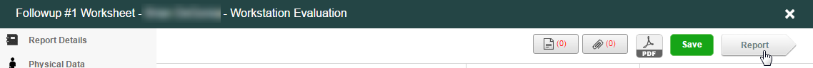
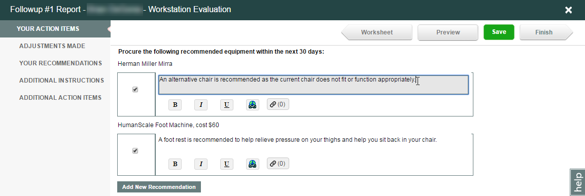
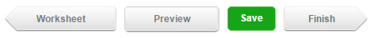

When you have completed all sections of the worksheet fully and accurately, click the Report arrow button (top right corner) to prepare the evaluation report.

Any recommendations that were created in the report will appear in this next section. Click inside each box to edit the text.

Your Action Items: Lists the equipment recommendations from the worksheet.
Adjustments Made: Lists any adjustments made to your equipment.
Your Recommendations: Lists the behavioral recommendations the employee should focus on.
Additional Instructions: This is a free form text box for any other information deemed necessary by the evaluator. Select the check box to have the information included in the employee's report.
Additional Action Items: This is a free form text box for any other information deemed necessary by the evaluator. Select the check box to have the information included in the employee's report.

Worksheet: Functions like a back navigation button; clicking it goes back to the worksheet if any changes need to be made before the report gets sent.
Preview: Allows the evaluator to preview the final report before it gets sent to the employee. To print the report in preview mode, click the PDF button on the next screen. Note: to return to the worksheet you must click the Worksheet button. Clicking Save or Finish will take you back to the Case Summary page.